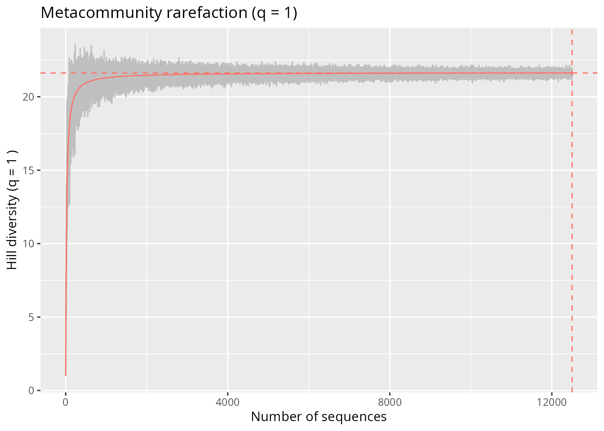
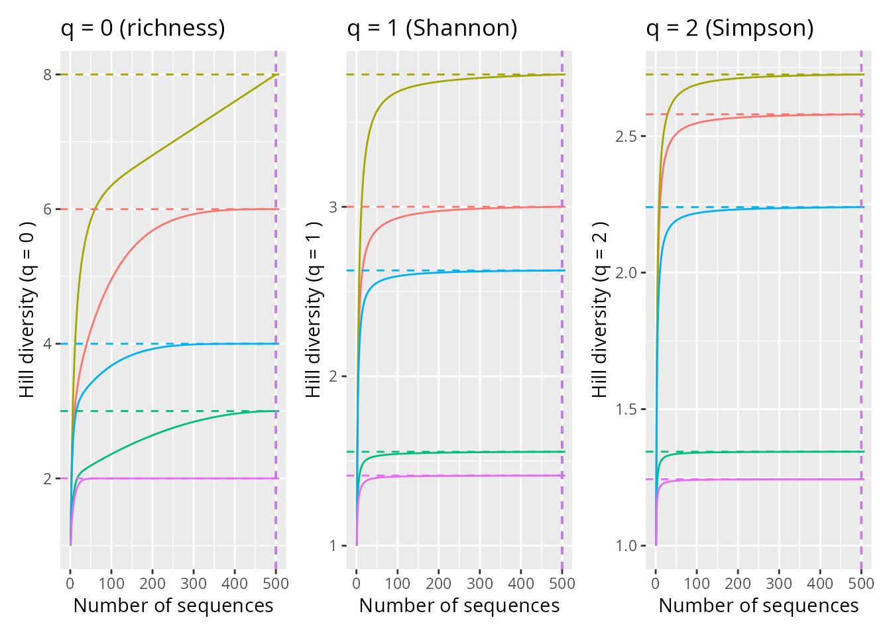
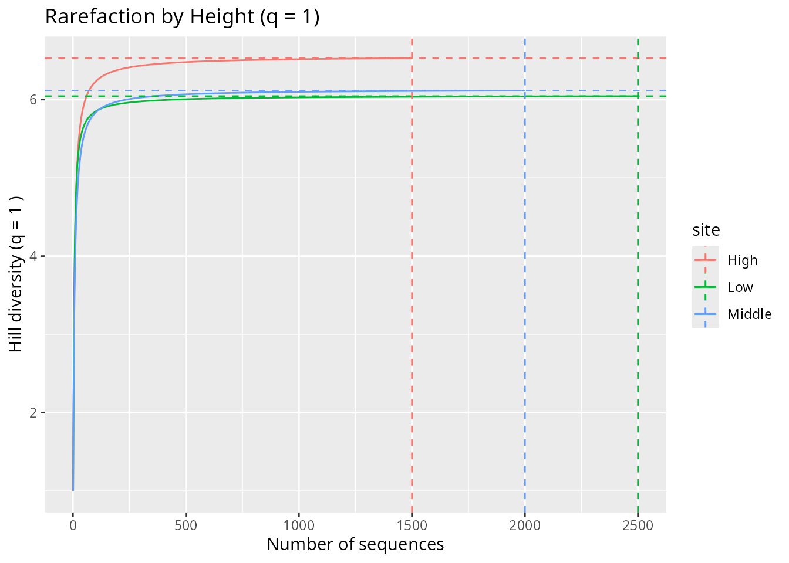
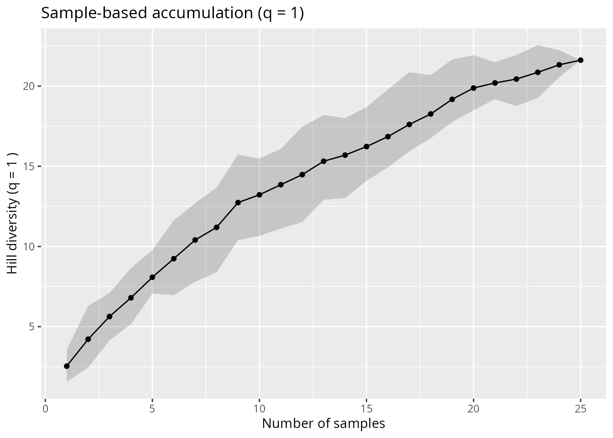
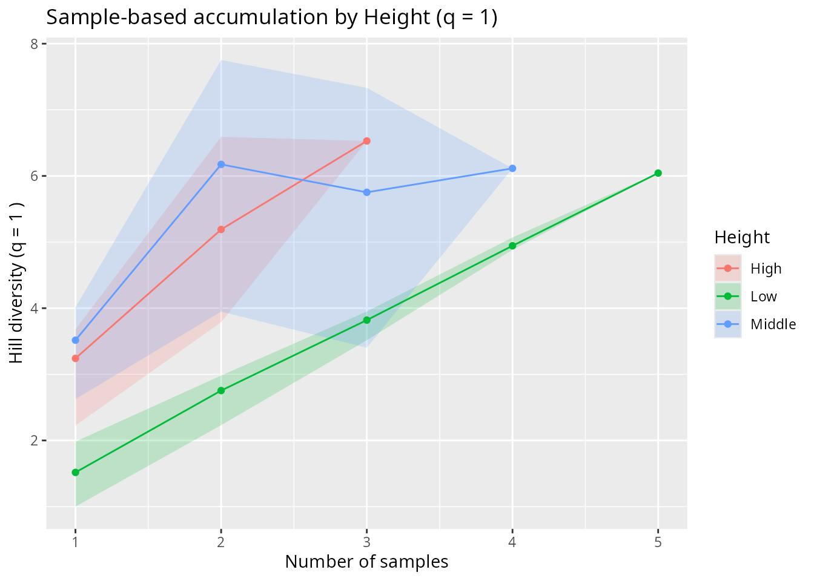
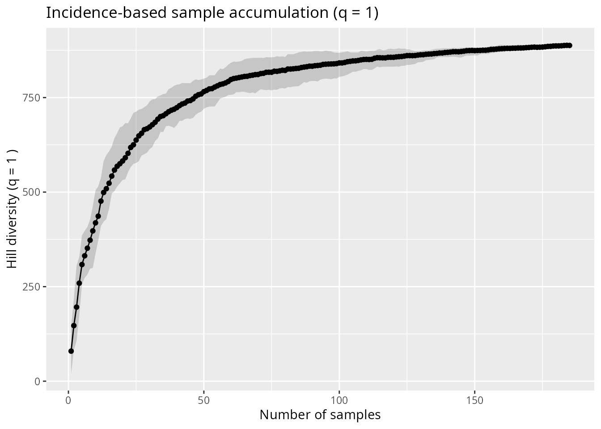
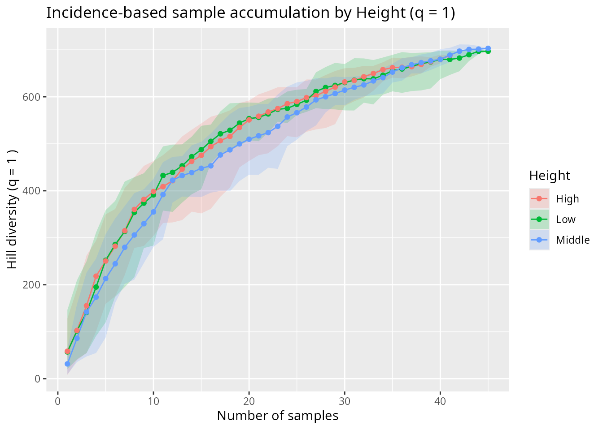
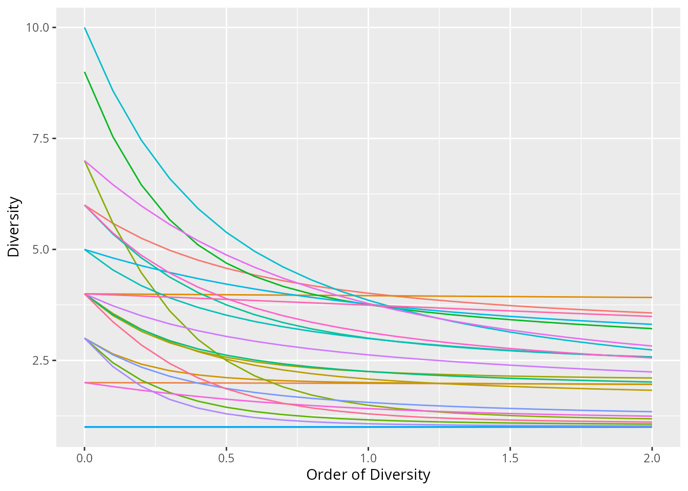
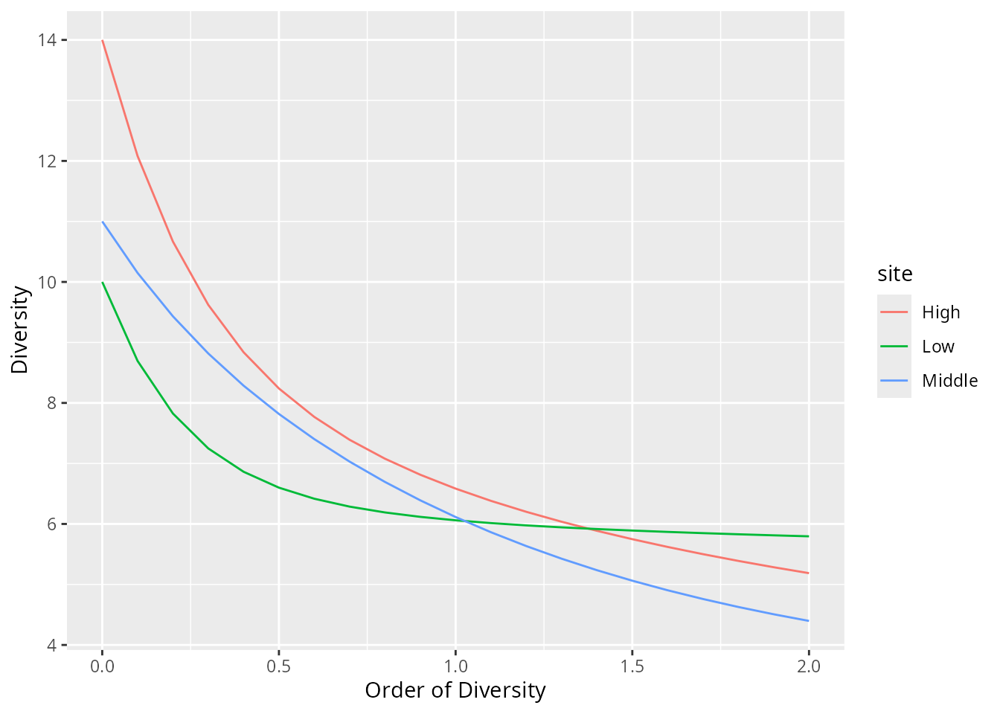
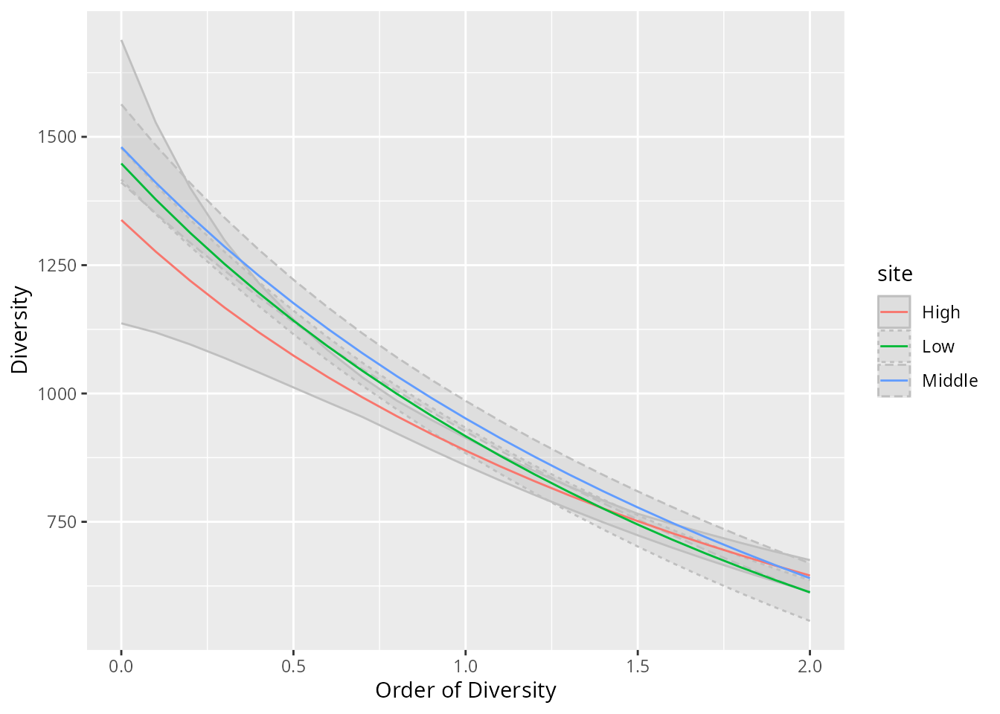

Accumulation and rarefaction curves
Source:vignettes/articles/accumulation-rarefaction.Rmd
accumulation-rarefaction.Rmd/! (WORK IN PROGRESS) /!
Accumulation and rarefaction curves are fundamental tools in biodiversity analysis. They address a key challenge: comparing diversity across communities that differ in sampling effort. In metabarcoding, this challenge is compounded by a second, more fundamental one: the relationship between sequence counts and the actual biological diversity in the field.
This vignette explains the conceptual choices involved and
illustrates how to compute and visualise these curves using
hill_acc_pq() and profile_hill_pq(), two
MiscMetabar functions built on the divent package (Marcon and Hérault 2015).
Which function should I use?
Decision tree for choosing the appropriate diversity curve in metabarcoding.
Read the sections below for the conceptual background behind each choice. The short answer on trusting read counts: use abundance-based approaches when your system is well-controlled (mock communities, microbiomes, calibrated protocols); prefer incidence-based when PCR biases or cross-contamination are likely — as is common in environmental surveys.
The eDNA challenge: sequences are not individuals
In traditional ecology, rarefaction standardises samples by drawing a fixed number of individuals, each of which unambiguously represents one organism. In metabarcoding, the recorded entities are DNA sequences, not individuals. This creates a fundamental ambiguity: one species can be represented by tens of thousands of reads (high DNA concentration, efficient primer binding) or by a handful (low biomass, poor amplification) regardless of its true ecological abundance (Alberdi and Gilbert 2019; Calderón-Sanou et al. 2019). Controlled mock-community experiments confirm this: read counts per species vary over an order of magnitude even at equal molar input, and correlations with true abundance hold only for dominant taxa (Skelton et al. 2023; Shelton et al. 2023).
This weakens the link between sequence counts and actual species abundance, and has practical consequences for how we measure diversity.
Abundance-based vs. incidence-based approaches
Two broad strategies exist for weighting the contribution of each OTU to diversity (Alberdi and Gilbert 2019):
Abundance-based approach: uses the number of DNA sequences assigned to each OTU as a proxy for its relative abundance. This is the default approach in most metabarcoding workflows and is appropriate when sequence counts are a reasonable proxy for relative biomass (e.g. in gut microbiome studies where microbial cells are well-represented in proportion to their abundance).
Incidence-based approach: ignores within-sample sequence counts and instead uses the number of samples in which each OTU is detected (presence/absence). Because it discards quantitative information, it is less sensitive to amplification biases, cross-sample contamination, or tag-jump artefacts — all of which inflate the counts of rare sequences. Incidence-based Hill numbers are only meaningful at the level of the whole system (pool of samples), not for individual samples.
Both approaches converge at q = 0 (species richness), because richness almost ignores relative abundances. They diverge for q > 0, where the abundance-based approach measures the effective number of equally abundant OTUs and the incidence-based approach measures the effective number of equally frequent (across samples) OTUs.
In practice, the choice depends on the research question and the degree of trust in sequence counts. The two are complementary: computing both and comparing them reveals how much the conclusions depend on quantitative information.
Hill numbers: a unified framework
Hill numbers (Hill 1973) provide a family of diversity indices parameterised by an order q:
- q = 0: species richness, treating all OTUs equally regardless of abundance. Highly sensitive to rare OTUs, which in metabarcoding are disproportionately likely to be sequencing artefacts.
- q = 1: exponential of Shannon entropy, weighting OTUs proportionally to their frequency. A balanced measure.
- q = 2: inverse Simpson concentration, dominated by common OTUs. Robust to rare artefactual sequences.
An important consequence for eDNA data: higher q values are more robust to data curation choices (Calderón-Sanou et al. 2019; Shirazi et al. 2021). Rarefaction curves at q = {1, 2} typically saturate well, while curves at q = 0 rarely saturate and are heavily affected by data curation decisions (chimera removal, clustering thresholds, etc.) and PCR variability across replicates. This makes q = 1 a pragmatic default — it weights OTUs by their frequency without disproportionately favouring rare or abundant ones.
For a thorough theoretical treatment of Hill Number, see Marcon (2018).
Setup
library(MiscMetabar)
library(phyloseq)
library(ggplot2)
library(patchwork)
set.seed(42)
data(data_fungi_mini)We rarefy data_fungi_mini to an even sequencing depth of
500 sequences per sample. This standardises sampling effort and is
required by individual-based rarefaction. In practice, rarefy to a
higher depth if possible. Recent analyses confirm that rarefaction
remains the most robust approach for controlling uneven sequencing depth
in amplicon data (Schloss 2024b,
2024a).
dfm_rarefied <- rarefy_even_depth(
data_fungi_mini,
rngseed = 1,
sample.size = 500
)
dfm_rarefied <- prune_samples(sample_names(dfm_rarefied) %in% sample(sample_names(dfm_rarefied), 25), dfm_rarefied)
dfm_rarefied
#> phyloseq-class experiment-level object
#> otu_table() OTU Table: [ 45 taxa and 25 samples ]
#> sample_data() Sample Data: [ 25 samples by 7 sample variables ]
#> tax_table() Taxonomy Table: [ 45 taxa by 12 taxonomic ranks ]
#> refseq() DNAStringSet: [ 45 reference sequences ]Individual-based rarefaction (abundance-based)
Individual-based rarefaction plots Hill diversity as a function of
the number of sequences drawn. It answers: is sequencing depth
sufficient to characterise diversity? The function
hill_acc_pq() with type = "individual" wraps
divent::accum_hill().
Note that this is an abundance-based approach: the curve reflects the sequence count distribution within each sample.
Metacommunity level
Merge all samples into a single community to obtain a global rarefaction curve:
sample_data(dfm_rarefied)$metacommunity <- "all"
hill_acc_pq(
dfm_rarefied,
q = 1,
type = "individual",
merge_sample_by = "metacommunity",
n_simulations = 5
) +
no_legend() +
ggtitle("Metacommunity rarefaction (q = 1)")
Individual-based rarefaction for the entire metacommunity (q = 1)
Per-sample rarefaction
Examining individual samples reveals heterogeneity in diversity and sampling completeness. Samples whose curve has not plateaued may harbour undetected taxa.
random_samples <- sample(sample_names(dfm_rarefied), 5)
dfm_5 <- prune_samples(random_samples, dfm_rarefied)
p_q0 <- hill_acc_pq(dfm_5, q = 0, type = "individual", n_simulations = 0) +
ggtitle("q = 0 (richness)")
p_q1 <- hill_acc_pq(dfm_5, q = 1, type = "individual", n_simulations = 0) +
ggtitle("q = 1 (Shannon)")
p_q2 <- hill_acc_pq(dfm_5, q = 2, type = "individual", n_simulations = 0) +
ggtitle("q = 2 (Simpson)")
(p_q0 + p_q1 + p_q2) & no_legend()
Individual-based rarefaction for 5 random samples at different Hill orders
At q = 0, curves rarely plateau because rare OTUs (many of which may be artefacts) keep accumulating with additional sequences. At q = 1 and q = 2, curves saturate faster because dominant OTUs are detected early. This illustrates why q = {1, 2} provides more reliable sampling completeness assessments (Calderón-Sanou et al. 2019).
Rarefaction by habitat
Merging samples by the Height variable aggregates
sequences within each habitat, enabling comparison at the habitat
scale:
hill_acc_pq(
dfm_rarefied,
q = 1,
type = "individual",
merge_sample_by = "Height",
n_simulations = 0
) +
ggtitle("Rarefaction by Height (q = 1)")
#> Warning in merge_samples2(physeq, merge_sample_by): `group` has missing values;
#> corresponding samples will be dropped
Individual-based rarefaction by Height (q = 1)
Sample-based accumulation (abundance-based)
Sample-based accumulation plots Hill diversity as a function of the number of samples added. It answers: does spatial (or temporal) sampling capture the full diversity? It reflects turnover across samples (beta-diversity), not sequencing depth within samples.
hill_acc_pq() with type = "sample" pools
samples in random order across n_permutations replicates
and computes Hill diversity of the pooled community at each step. The
shaded band shows the confidence envelope.
Note: even though this approach aggregates samples, the pooled community is still evaluated using sequence counts — it remains abundance-based. Compare with the incidence-based approach in the next section.
hill_acc_pq(
dfm_rarefied,
q = 1,
type = "sample",
n_permutations = 10
) +
ggtitle("Sample-based accumulation (q = 1)")
Sample-based accumulation for the entire dataset (q = 1, 10 permutations)
By splitting by habitat, one can assess whether diversity saturates within each level and how much each level contributes to the total:
hill_acc_pq(
dfm_rarefied,
q = 1,
type = "sample",
merge_sample_by = "Height",
n_permutations = 10
) +
ggtitle("Sample-based accumulation by Height (q = 1)")
Sample-based accumulation by Height (q = 1)
Incidence-based approach
When sequence counts are not trusted as proxies for abundance — for
instance due to primer binding biases or cross-contamination — an
incidence-based approach uses only presence/absence of OTUs across
samples. as_binary_otu_table() converts the OTU table to
0/1 before analysis.
Because incidence-based Hill numbers measure the effective number of
OTUs weighted by the fraction of samples they occur in, they are only
meaningful at the level of the entire system and are most naturally used
with type = "sample".
data(data_fungi)
dfm_binary <- as_binary_otu_table(data_fungi)
hill_acc_pq(
dfm_binary,
q = 1,
type = "sample",
n_permutations = 10
) +
ggtitle("Incidence-based sample accumulation (q = 1)")
Incidence-based sample accumulation (q = 1)
data_fungi_woNA4Height <- subset_samples_pq(
data_fungi,
!is.na(data_fungi@sam_data$Height)
)
dfm_binary_height <- as_binary_otu_table(data_fungi_woNA4Height)
hill_acc_pq(
dfm_binary_height,
q = 1,
type = "sample",
merge_sample_by = "Height",
n_permutations = 10
) +
ggtitle("Incidence-based sample accumulation by Height (q = 1)")
Incidence-based sample accumulation by Height (q = 1)
Comparing the abundance-based and incidence-based accumulation curves reveals how much the diversity ordering among habitats depends on quantitative sequence information vs. simple detection patterns.
Diversity profiles
Diversity profiles show how the Hill diversity index varies
continuously across orders q, for a fixed dataset.
profile_hill_pq() wraps
divent::profile_hill().
A steeply declining profile indicates an uneven community dominated by a few OTUs. A flat profile indicates high evenness. The shape of the profile is itself informative: two communities with identical diversity at q = 1 may have very different profiles, revealing different abundance distributions.
Abundance-based profiles
profile_hill_pq(dfm_rarefied) + no_legend()
Abundance-based Hill diversity profiles per sample
profile_hill_pq(dfm_rarefied, merge_sample_by = "Height", n_simulations = 0)
#> Warning in merge_samples2(physeq, merge_sample_by): `group` has missing values;
#> corresponding samples will be dropped
Abundance-based Hill diversity profiles merged by Height
Incidence-based profiles
Applying profile_hill_pq() to a binary OTU table yields
incidence-based diversity profiles, where each OTU is weighted by the
proportion of samples it occurs in rather than its sequence count:
profile_hill_pq(
as_binary_otu_table(data_fungi_woNA4Height),
merge_sample_by = "Height",
n_simulations = 5
)
Incidence-based Hill diversity profiles merged by Height
Contrasting the abundance-based and incidence-based profiles highlights which diversity patterns are robust to the quantitative interpretation of sequence counts and which depend on it.
Beyond size-based rarefaction: coverage-based approaches
The approaches above standardise by sample size (number of sequences or number of samples). An emerging alternative standardises by sample coverage — the estimated fraction of the community already detected in a sample (Chao et al. 2020). This matters because the same sequencing depth can yield very different coverages depending on community evenness: a highly uneven community (a few dominant OTUs) achieves high coverage quickly, while an even one requires far more sequences.
Importantly, when the treatment or environment of interest also affects community evenness (e.g. high land-use intensity simplifies communities), size-based rarefaction conflates diversity loss with coverage gain. Kortmann et al. (2025) demonstrated this directly: coverage-standardised Hill numbers revealed a 27–44% stronger diversity decline along a land-use gradient in insects than size-based rarefaction suggested. The theoretical foundation (sample completeness profiles parameterised by q) is formalised in Chao et al. (2020).
Coverage-based rarefaction is not yet implemented in
hill_acc_pq(), but is available via the iNEXT.4steps
package, which accepts both abundance and incidence data and produces
rarefaction/extrapolation curves standardised by coverage for any Hill
order q (Chao et al. 2020). It is
worth running alongside the curves produced here whenever there is
reason to suspect that sampling coverage varies across the samples being
compared.
Summary
| Approach | Data | x-axis | Function | What it reveals |
|---|---|---|---|---|
| Individual-based rarefaction | Abundance | Number of sequences | hill_acc_pq(type = "individual") |
Sequencing depth sufficiency |
| Sample-based accumulation | Abundance | Number of samples | hill_acc_pq(type = "sample") |
Spatial turnover, beta-diversity |
| Incidence-based accumulation | Presence/absence | Number of samples |
as_binary_otu_table() +
hill_acc_pq(type = "sample")
|
Turnover robust to amplification biases |
| Abundance-based profiles | Abundance | Hill order q | profile_hill_pq() |
OTU abundance distribution |
| Incidence-based profiles | Presence/absence | Hill order q |
as_binary_otu_table() +
profile_hill_pq()
|
OTU frequency distribution across samples |
References
Session information
sessionInfo()
#> R version 4.6.1 (2026-06-24)
#> Platform: x86_64-pc-linux-gnu
#> Running under: Pop!_OS 24.04 LTS
#>
#> Matrix products: default
#> BLAS: /usr/lib/x86_64-linux-gnu/openblas-pthread/libblas.so.3
#> LAPACK: /usr/lib/x86_64-linux-gnu/openblas-pthread/libopenblasp-r0.3.26.so; LAPACK version 3.12.0
#>
#> locale:
#> [1] LC_CTYPE=en_US.UTF-8 LC_NUMERIC=C
#> [3] LC_TIME=en_US.UTF-8 LC_COLLATE=en_US.UTF-8
#> [5] LC_MONETARY=en_US.UTF-8 LC_MESSAGES=en_US.UTF-8
#> [7] LC_PAPER=en_US.UTF-8 LC_NAME=C
#> [9] LC_ADDRESS=C LC_TELEPHONE=C
#> [11] LC_MEASUREMENT=en_US.UTF-8 LC_IDENTIFICATION=C
#>
#> time zone: Europe/Paris
#> tzcode source: system (glibc)
#>
#> attached base packages:
#> [1] stats graphics grDevices utils datasets methods base
#>
#> other attached packages:
#> [1] patchwork_1.3.2 MiscMetabar_0.17.0.9000 dplyr_1.2.1
#> [4] ggplot2_4.0.3 phyloseq_1.56.0 divent_0.5-4
#> [7] Rcpp_1.1.1-1.1
#>
#> loaded via a namespace (and not attached):
#> [1] gtable_0.3.6 xfun_0.58 bslib_0.11.0
#> [4] htmlwidgets_1.6.4 visNetwork_2.1.4 Biobase_2.72.0
#> [7] lattice_0.22-9 vctrs_0.7.3 tools_4.6.1
#> [10] Rdpack_2.6.6 generics_0.1.4 biomformat_1.40.0
#> [13] stats4_4.6.1 parallel_4.6.1 tibble_3.3.1
#> [16] cluster_2.1.8.2 pkgconfig_2.0.3 Matrix_1.7-5
#> [19] data.table_1.18.4 RColorBrewer_1.1-3 S7_0.2.2
#> [22] desc_1.4.3 S4Vectors_0.50.1 RcppParallel_5.1.11-2
#> [25] lifecycle_1.0.5 compiler_4.6.1 farver_2.1.2
#> [28] stringr_1.6.0 textshaping_1.0.5 Biostrings_2.80.1
#> [31] Seqinfo_1.2.0 codetools_0.2-20 permute_0.9-10
#> [34] htmltools_0.5.9 sass_0.4.10 yaml_2.3.12
#> [37] pillar_1.11.1 pkgdown_2.2.0 crayon_1.5.3
#> [40] jquerylib_0.1.4 MASS_7.3-65 cachem_1.1.0
#> [43] vegan_2.7-5 iterators_1.0.14 foreach_1.5.2
#> [46] nlme_3.1-169 tidyselect_1.2.1 digest_0.6.39
#> [49] stringi_1.8.7 purrr_1.2.2 reshape2_1.4.5
#> [52] labeling_0.4.3 splines_4.6.1 ade4_1.7-24
#> [55] fastmap_1.2.0 grid_4.6.1 cli_3.6.6
#> [58] magrittr_2.0.5 DiagrammeR_1.0.12 survival_3.8-6
#> [61] ape_5.8-1 withr_3.0.3 scales_1.4.0
#> [64] rmarkdown_2.31 XVector_0.52.0 multtest_2.68.0
#> [67] igraph_2.3.3 otel_0.2.0 ragg_1.5.2
#> [70] evaluate_1.0.5 knitr_1.51 IRanges_2.46.0
#> [73] rbibutils_2.4.1 mgcv_1.9-4 rlang_1.2.0
#> [76] glue_1.8.1 BiocGenerics_0.58.1 rstudioapi_0.19.0
#> [79] jsonlite_2.0.0 R6_2.6.1 plyr_1.8.9
#> [82] systemfonts_1.3.2 fs_2.1.0